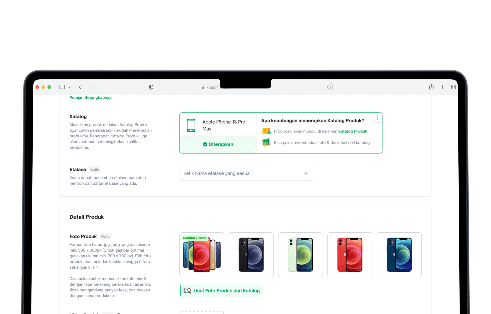
Discovery
Context
Tokopedia had over 6 billion products in its database with no visibility into product types at the SKU level, making catalog management nearly impossible at scale.
Through workshops with the seller inventory and catalog teams, we aligned on a solution: connecting each product to an existing catalog in Tokopedia to bring structure and visibility.
Benefit
Working with the product and catalog teams, we identified three core benefits:
For Tokopedia
- Able to know supply & demand
- Able to make a better model for price recommendation
- Improve Product listing quality
- Increase feature adoption rate
For Tokopedia Seller
- Improve product discoverability
- Improve Product Quality
- Faster adding product
For Tokopedia Buyer
- Improve buyer’s browsing experience
How does it work?
When a seller's product is linked to a catalog, the system surfaces recommendations for photos, videos, specs, descriptions, and pricing — all pulled from catalog data.
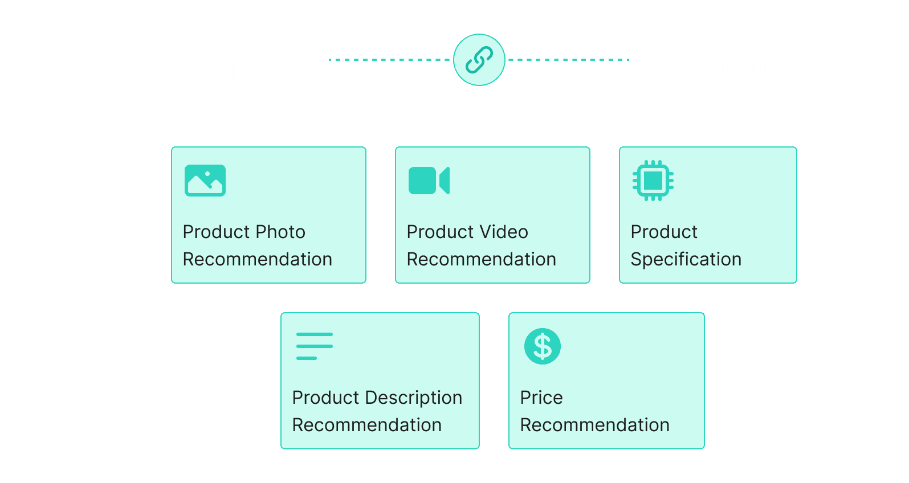
Defining Requirement
Prioritization
Given the scope, we worked with the PM, catalog team, and engineering to phase the rollout. Phase 1 focused on photo and description catalog for phones, electronics, and gadgets only.
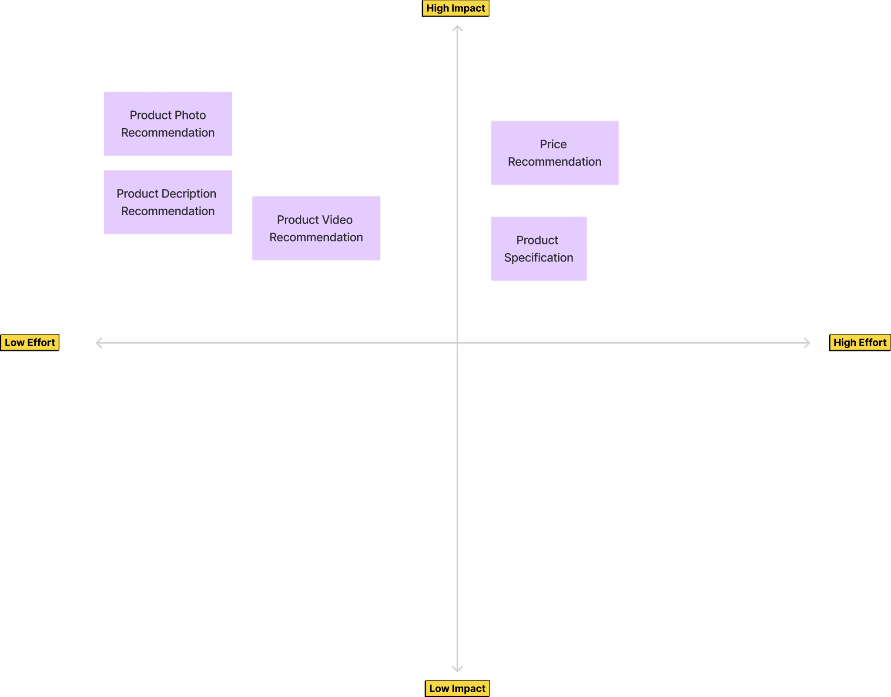
Phase 1
- Product Photo Catalog
- Product Description Catalog
- HP, Electronic & Gadget category product only
Phase 2
- Video Catalog
- Specification Catalog
- Price Recommendation
Mapping Requirement
Mapping requirements ensured all stakeholders had a shared understanding of the goals. I proposed potential solutions for each requirement, then worked with the PM to prioritize what was both impactful and technically feasible.
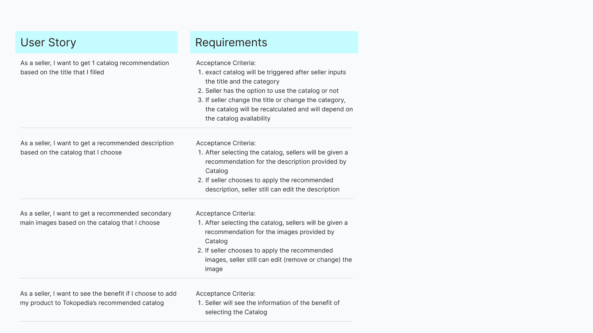
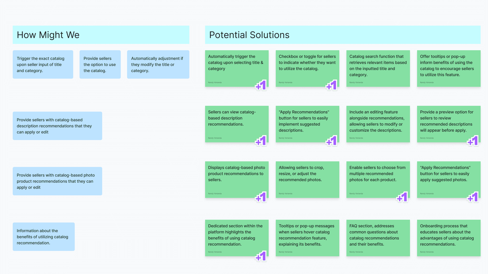
Design Exploration
User Flow
I mapped the full seller journey for assigning a catalog to a product. The flow: set product name and category → apply catalog → receive photo and description recommendations → apply to product.
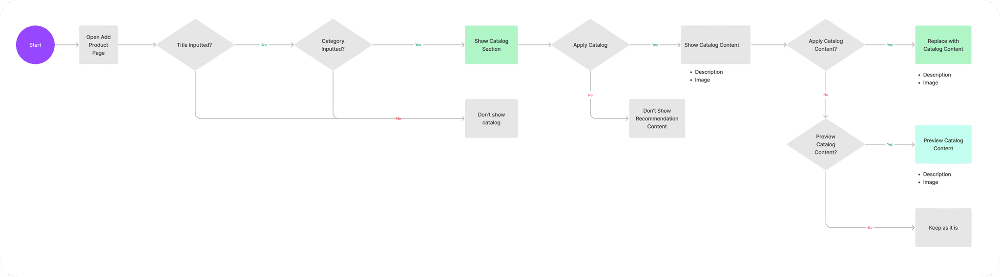
Explore Information Architecture
I explored the current information architecture of the Add Product page, regrouping fields into more logical sections. After stakeholder review, we aligned on explore position #2.
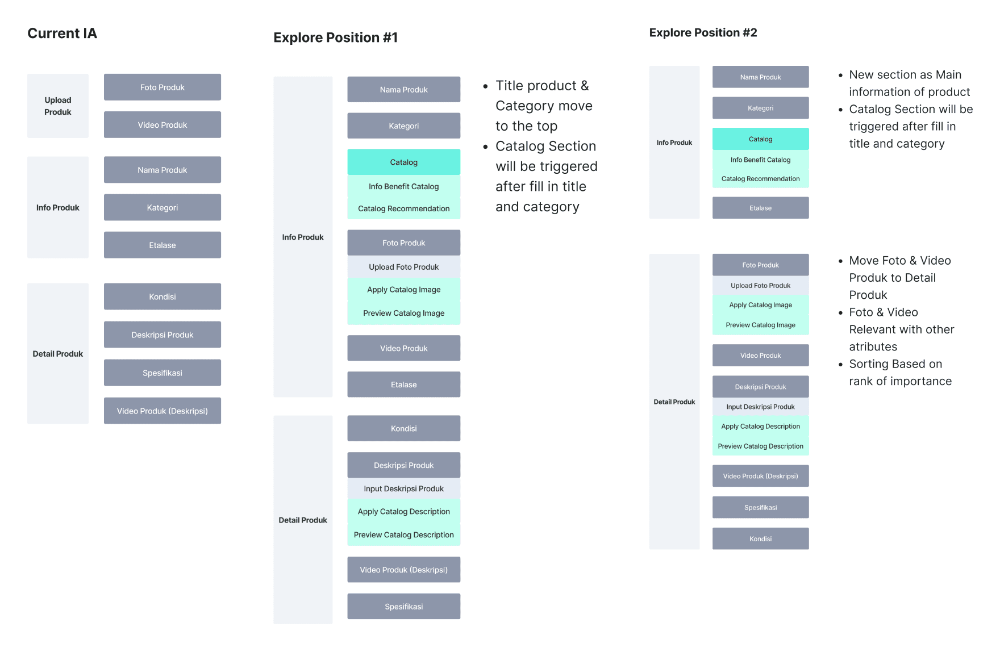
Design Component Exploration
Design component explorations for the catalog feature.
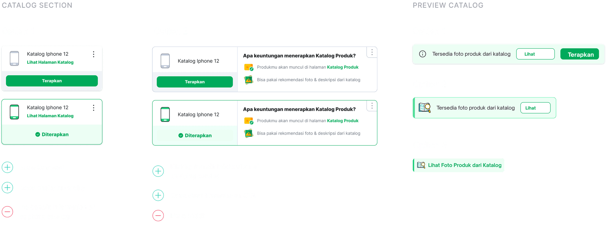
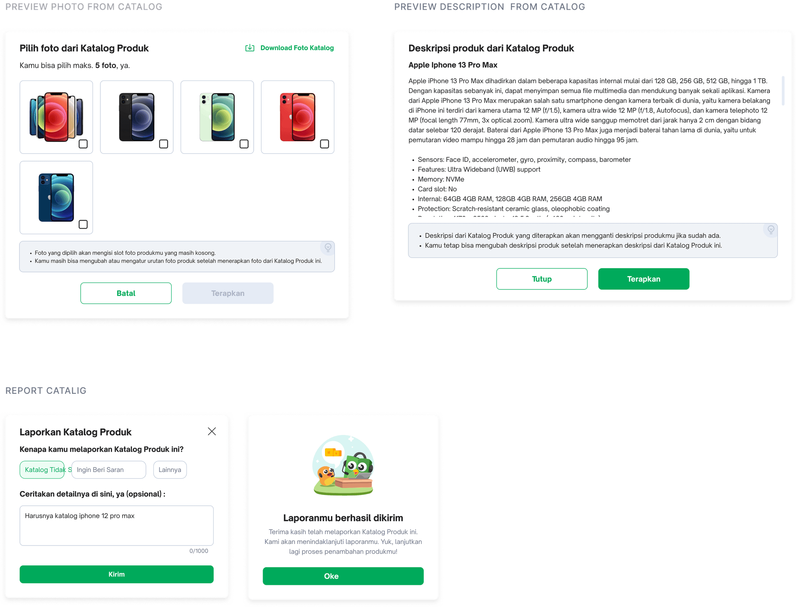
Explore Interaction #1
Option to See Catalog First
Seller selects a catalog, then reviews photo and description recommendations before applying them. Content can be edited at any time.
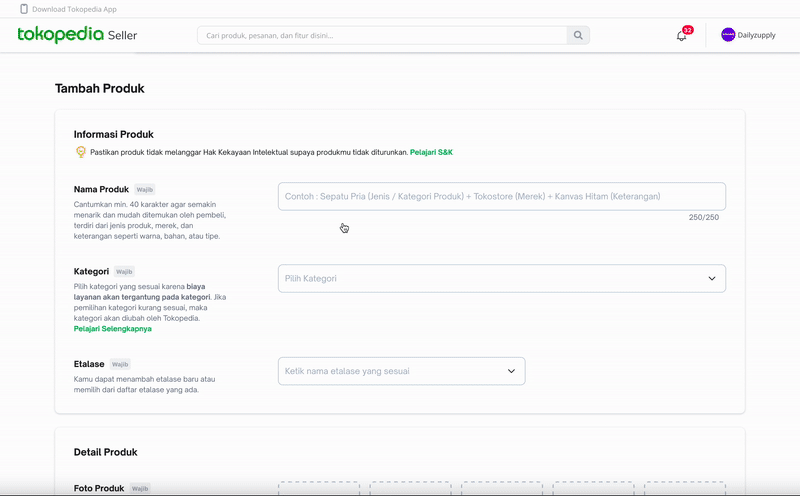
Explore Interaction #2
Auto Apply Content Catalog
Catalog content is automatically applied once selected. Sellers can review and edit afterward.
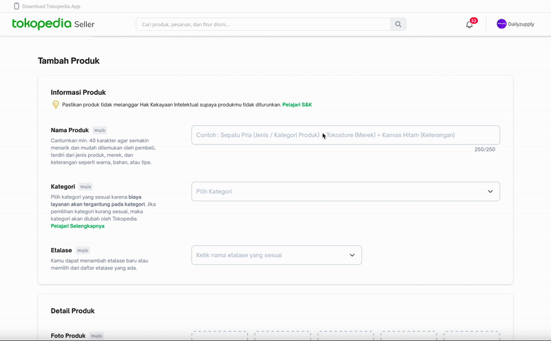
Design Validation
Usability Testing
To validate the design, we ran usability testing with sellers across different shop types to understand their expectations, behaviors, and preference between the two catalog interaction approaches.
Objective
- What seller expectation about catalog feature
- Seller behaviour when adding photo or fill description for their product
- What preferability approach when applying catalog to their product
- What their opinion if we switch section name and photo position
Target User
- All Type of Shop
- Seller with category (HP & Gadget, Electronic)
- Preferred Desktop User
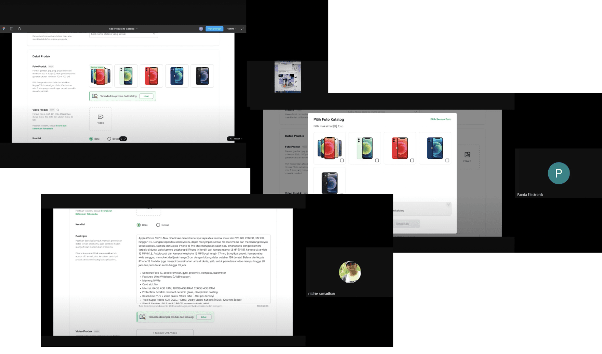
Synthesizing UT Result
I synthesized the usability testing findings to identify key insights and patterns. This informed the final design decisions for the feature.
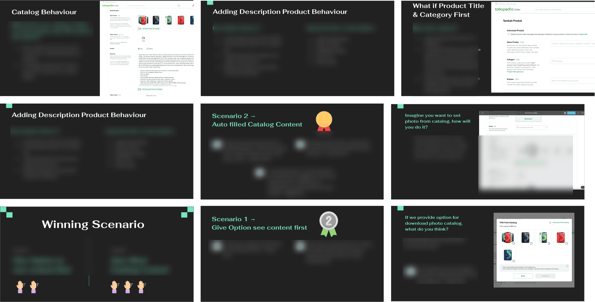
Final Design & Takeaways
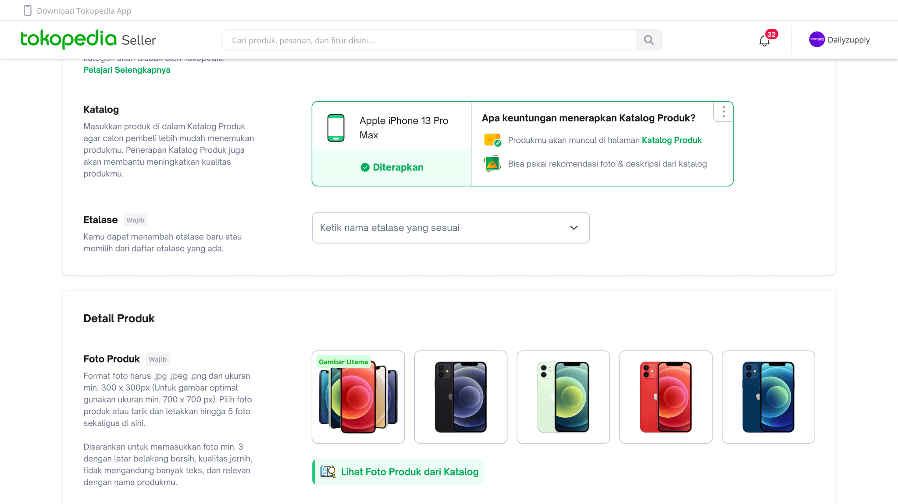
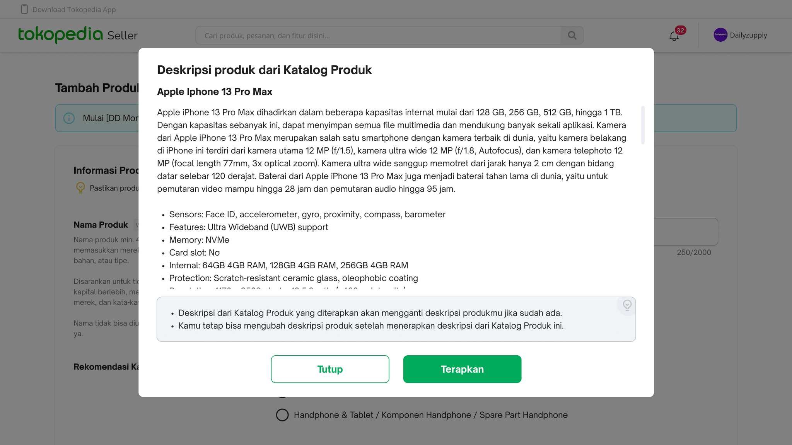
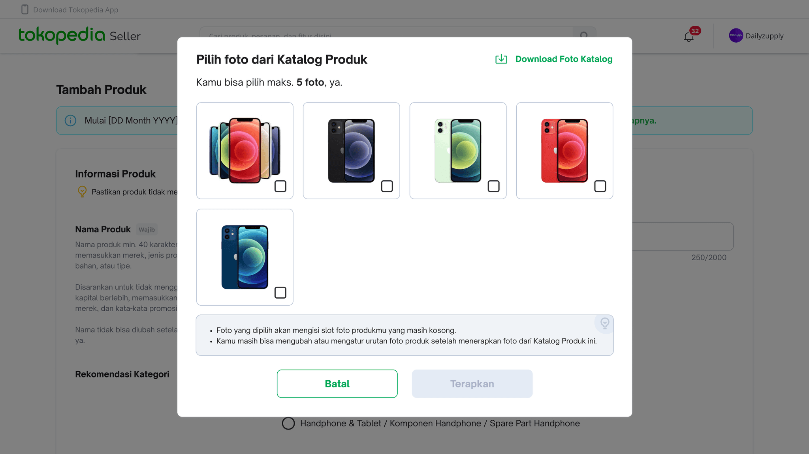
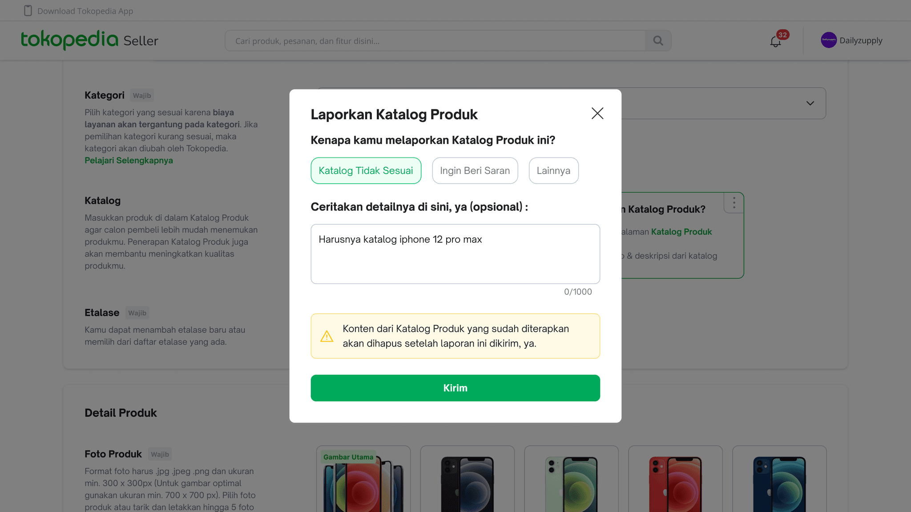
Design Impact
Launched in Q1 2023, the feature drove measurable efficiency gains for sellers managing catalog products, and received positive feedback across the board.
"The feature is very helpful, i think if this recommendation not only on photo & description, that will much better."Panda Electronic
"Now i don't have to think about the photo, and description, i just use catalog feature, and i can edit it afterward."Gerbang Online
Designed & Developed by Randy Varianda